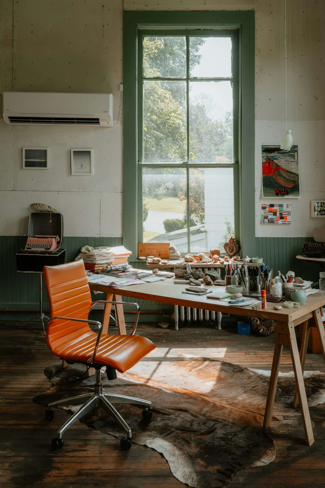

Supporting recovery
Practical and emotional resources for individuals rebuilding their lives after exit, built specifically for this experience rather than adapted from generic self-help content.

Open Space Support is a support and resource platform for individuals and families affected by high-control religious organisations. We're starting with a specific focus - former Jehovah's Witnesses - because that's the experience closest to our own, and the one we understand best. But this platform is built to be accessible to anyone leaving a high-control group, whatever that group looked like for them. The practical and emotional challenges of rebuilding a life after exit share far more in common than they differ.
We want every person who leaves a high-control environment - whichever group, whatever their beliefs now - to have somewhere reliable to turn.
Practical and emotional resources for individuals rebuilding their lives after exit, built specifically for this experience rather than adapted from generic self-help content.
Because the impact of leaving rarely stops at the individual. Partners, children, and relatives affected by shunning, addiction, grief, or relationship breakdown deserve guidance too, and are too often left out of recovery conversations altogether.

A safe, professional, and welcoming environment where nobody has to justify their situation or prove their story before they're taken seriously.
Collecting real needs-assessment data so we (and eventually others) can identify genuine support gaps, rather than guessing at what's needed.

A platform built to scale, so today's resource library and application portal can grow into tomorrow's funded programmes, professional partnerships, and direct support services.

Every conversation, application, and piece of evidence handled with the security and discretion this experience deserves. Trust has to be earned before support can be accepted - and that starts with how carefully we handle what people share with us.

This site is the foundation. Over time, we intend to grow it into a long-term social impact initiative - potentially a Community Interest Company, a registered charity, or a funded support service capable of providing direct assistance, not just information. Read more in Future Plans below.
Reflection piece
Most people think gambling is about money. Often, it isn't. Sometimes we gamble with something far more valuable: our time, our relationships, our identity, and our future.
Imagine standing in front of a slot machine. When you first sat down, you were promised an extraordinary prize. So you kept playing. At first, the cost seemed small - a little time, a little trust. Over the years, the investment grew, until your hopes, routines, and future were all connected to it.
The machine didn't only take. It gave something back too - belonging, purpose, moments of real joy. Those experiences were real, and they deserve to be recognised honestly.
Then, one day, different questions start to emerge. And many people discover that the greatest barrier isn't fear of the future - it's the weight of the past. Psychologists call this the sunk cost fallacy: the more we've invested, the harder it feels to walk away, even when we're no longer sure it's right.
But a slot machine has no memory. The next spin isn't improved by everything that came before. The years already invested can't be recovered by investing more of them. They're part of your story - they don't have to decide your future.
Perhaps the more useful question isn't
Have I invested too much to change?
It's:
If I encountered this for the first time today, knowing what I know now, what would I freely choose?
Only you can answer that.
If any of this describes you, you're in the right place:
This site is also here for:
Whichever of these is you, you don't need to explain or prove anything before you start looking around.
At Open Space Support, we don't exist to tell people what to believe or what decisions to make. We exist because everyone deserves the chance to explore important questions without fear, pressure, or judgement.
Our role is to bring trusted information, practical resources, and specialist support into one place - helping people understand their options and find what actually fits their circumstances.
For some, that journey may involve remaining within their faith community. For others, it may mean redefining long-held beliefs, or rebuilding life after leaving. Many people simply want a safe place to ask questions they've never felt able to ask before.
Wherever you are, you deserve reliable information, compassionate support, and the freedom to reach your own conclusions.
We don't ask anyone to exchange one set of beliefs for another. We provide information, support, and a safe place to think - and we trust that, given freedom, compassion, and reliable information, people are capable of making the decisions that are right for them.
Every person is treated with dignity, whatever their story or where they are in it.
In practice: no forms that demand you justify your situation before we'll help.
Real-world problems get real-world solutions - not just encouragement.
In practice: our resources tell you what to actually do, not just that things will get better.
Your decisions are yours. We inform; we never direct.
In practice: we present options and information - never a single "right" path.
Recovery isn't linear, and we don't expect it to be.
In practice: there's no timeline pressure anywhere on this site - come back whenever you need to.
Whatever group you left, and whatever you believe now, you belong here.
In practice: nothing on this site assumes or requires a particular belief, or lack of one.
Everything we share is honest and evidence-informed, never exaggerated for effect.
In practice: we'll tell you plainly when something is outside our expertise and point you elsewhere.
Practically, that means we provide:
Employment, housing, financial literacy, and everyday life admin many people were never taught.
Support for grief, identity disruption, anxiety, and the weight of religious trauma and shunning.
Honest signposting for coping after upheaval - for you or someone you love.
Resources that fill gaps left by restricted access to education and information.
Connections to specialists who understand this experience, not generic advice.
Real evidence from people going through this, so support matches what's actually needed.
Open Space Support began as a website, but it's designed to grow into something bigger.
Over time, we're working toward:
None of this happens overnight, and none of it happens without the evidence to justify it. That's why gathering real data - not just building resources - is as much a part of our mission as the guidance itself.
Leaving may be the end of one chapter. This is what we're building for the next one.